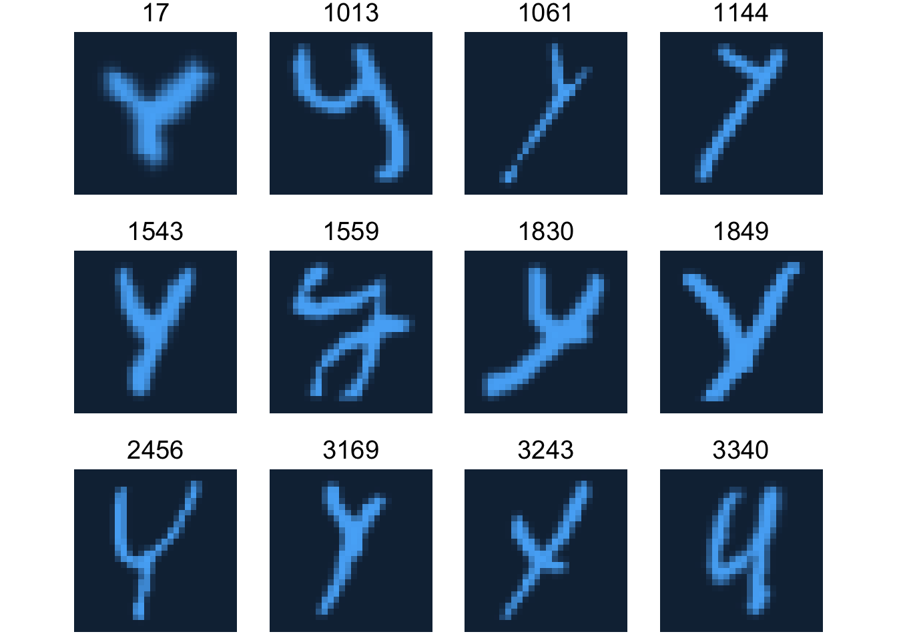

The analysis of handwriting has always held a captivating allure, offering insights into the distinctive subtleties of human expression. Even in today’s digital age, the study of handwriting remains relevant, finding applications in fields like forensic document examination, linguistics, and personalized marketing. This report delves into the realm of handwritten letter classification by employing a combination of Principal Component Analysis (PCA) and machine learning methodologies. By harnessing these techniques, our aim is to unravel the unique variations in individuals’ letter-writing styles, ultimately contributing to a deeper comprehension of the intricate art of handwriting.
Data Description
The data is based on the EMNIST dataset that contains a 28x28 pixel image of a letter from the 26-letter Roman alphabet. You can find details about this dataset in this article.
My dataset is assigned a single random letter and a random subset from this dataset. Separate to this main data, the dataset will also have a new records dataset that contains five observations.
Each row of the data is an image. Each column corresponds to one pixel value. There are 28 x 28 = 784 columns in total. The image is a single letter with a mix of upper case and lower case.
Preliminary analysis
Q1 What is the letter in your data?
The letter in my data is ‘y’.
Q2 Plot a random sample of 12 images of your data with the correct orientation.
Code
imagedata_to_plotdata <-function(data = mydata, w =28, h =28, which =sample(1:3448, 12)) { data %>%mutate(id =1:n()) %>%filter(id %in% which) %>%pivot_longer(starts_with("V")) %>%mutate(col =rep(rep(1:w, each = h), n_distinct(id)),row =rep(rep(1:h, times = w), n_distinct(id)))}gletter <-imagedata_to_plotdata(mydata) %>%ggplot(aes(col, row)) +geom_tile(aes(fill = value)) +facet_wrap(~id, nrow =3) +scale_y_reverse() +theme_void(base_size =18) +guides(fill ="none") +coord_equal()gletter

Q3 Perform a principal component analysis (PCA) on your data. How much variation does the first 5 principal components explain in the data?
Importance of first k=5 (out of 784) components:
PC1 PC2 PC3 PC4 PC5
Standard deviation 667.3433 558.4448 520.02544 418.33520 408.85848
Proportion of Variance 0.1435 0.1005 0.08712 0.05638 0.05385
Cumulative Proportion 0.1435 0.2439 0.33105 0.38742 0.44128
We can see that the first five principal components explain 44.128% of the variation in the data, and PC1, PC2, PC3, PC4 and PC5 explain 14.35%, 10.05%, 8.712%, 5.638% and 5.385% of the variation in the data respectively.
Q4 Show what aspect of the data the first and second principal component loadings capture.
Call:
hclust(d = dist(mydata_pca$x), method = "average")
Cluster method : average
Distance : euclidean
Number of objects: 3448
Q6 Cut the tree from question 5 to 4 clusters. Show how many observations you have per cluster.
Code
cave <-cutree(haverage, k =4)table(cave) %>%kable(caption ="How many observations in the 4 clusters.") %>%kable_styling()
How many observations in the 4 clusters.
cave
Freq
1
3441
2
4
3
2
4
1
Q7 Show a sample of 10 (or the total number of images in a cluster if less than 10 observations in a cluster) images from each cluster like the plot below. What do you notice about the cluster groups?
We could see that the tail of the letter ‘y’ seems to be straight and the upper part more like ‘v’ in cluster 1, while the tail of the letter ‘y’ is more curved and the upper part of the letter ‘y’ is more like ‘u’ in cluster 2. Then in cluster 3, the upper part of the letter ‘y’ is narrower in width than the lower part, and finally, in cluster 4 the upper part of the letter ‘y’ is like ‘u’ and the lower part of the letter ‘y’ is like ‘v’. And the imbalance of clusters, majority of images are in one cluster, the other 3 clusters are smaller.
Report
Abstract
Handwriting analysis has consistently captivated researchers, offering a window into the intricate details of human expression. Despite the prevalence of digital communication, handwriting remains pertinent, finding utility in diverse domains such as forensic document analysis, linguistics, and personalized marketing. This report explores the landscape of handwritten letter classification through the integration of Principal Component Analysis (PCA) and advanced machine learning techniques. By harnessing these methodologies, our objective is to decode the distinct variations present in how individuals write letters, thereby enhancing our understanding of the nuanced world of handwriting.
Choose pricipal components
To explore the way each person writes letters and to categorize the way they write them. I do a dimension reduction to the pixel data of a letter. And then, I produce a scree plot, and the elbow appears around the fourth to seventh PC (Principal component), therefore I choose 5 PCs (Principal components) to be used to analyze, and the 5 PCs (Principal components) explain 44.12% of the variation in the data.
Importance of first k=5 (out of 784) components:
PC1 PC2 PC3 PC4 PC5
Standard deviation 667.3433 558.4448 520.02544 418.33520 408.85848
Proportion of Variance 0.1435 0.1005 0.08712 0.05638 0.05385
Cumulative Proportion 0.1435 0.2439 0.33105 0.38742 0.44128
Classify data
I choose the k-means method to divide the different ways that a person can write a particular letter into 3 clusters. This plot shows that the letter ‘y’ is more centered in cluster 1, and the letter ‘y’ is italic, the letter tends to lean to the right in cluster 2, and the letter ‘y’ is fatter and the upper part of the letter ‘y’ resembles a ‘u’ in cluster 3.
imagedata_to_newrecord <-function(data = newrecord, w =28, h =28, which =sample(1:5, 5)) { data %>%mutate(id =1:n()) %>%filter(id %in% which) %>%pivot_longer(starts_with("V")) %>%mutate(col =rep(rep(1:w, each = h), n_distinct(id)),row =rep(rep(1:h, times = w), n_distinct(id)))}new_gletter <-imagedata_to_newrecord(newrecord) %>%ggplot(aes(col, row)) +geom_tile(aes(fill = value)) +facet_wrap(~id, nrow =3) +scale_y_reverse() +theme_void(base_size =18) +guides(fill ="none") +coord_equal()
Classify new records
For classifying a set of new record of 5 observations, I use 3 supervised learning methods, and I set principal components as predictors.
Code
set.seed(32649479)x <- mydata_pca_5$xcluster <-as_tibble(x) %>%mutate(group =factor(kout$cluster))# create mydata's response variable, PCs as predictors.newrecord_pca <-prcomp(newrecord)newdata <-as_tibble(newrecord_pca$x) #making PCs as predictors in newdata.
I create three models by using the kNN method, the Support vector classifier method with Polynomial kernel and the Random forest method respectively to classify the new 5 observations.
We can see that the classified results following the three models are the same and sensible, we could easily see that these are different 3 groups. Cluster 1 has a fatter letter, cluster 2 is more formal and centered, and cluster 3 leans a little to the right.
We could see that the accuracy of the Support vector classifier model is the best, which is 0.98.
Conclusion
The kNN model, the Support vector classifier model with the Polynomial kernel and the Random forest model are both good for classifying the new record of 5 observations, but following the accuracy of each model, I recommend the Support vector classifier model with the Polynomial kernel.